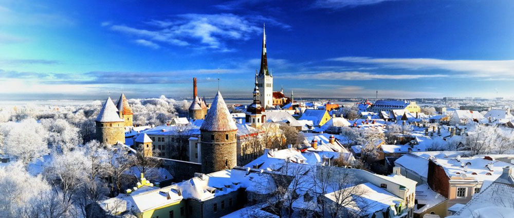
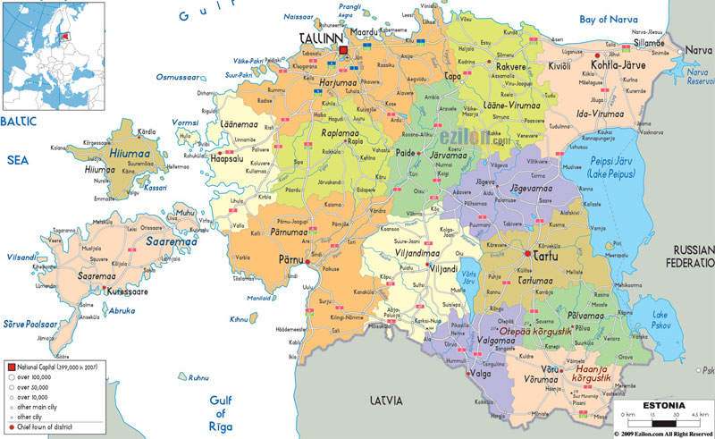

Крупнейшие города:
Таллинн
Тарту
Нарва
Пярну
Официальные языки:
Территория:
132-я в мире
Всего - 45 227 км²
% водной поверхности - 4,56%
Население:
Оценка (2018) - 1 319 133 чел.
Плотность - 28 чел./км²
Названия жителей:
Эстонец
Эстонка
Эстонцы
Валюта:
Евро (EUR)
Финно-угорские племена прибывают с востока и заселяются вдоль северного побережья Балтийского моря.
В 1202 году Папа Римский созывает крестовый поход против язычников в районе Балтийского моря. Епископ Альберт основывает Орден Меченосцев, это приводит к четырем десятилетиям кровопролитий и множеству союзов среди немцев (базировавшихся в Риге), датчан, шведов, русских, литовцев и местных племён. В 1219 году король Дании Вольдемар II использовал город Ревель (Таллин) в качестве форпоста в северной Эстонии. Тогда же возникло название Таллина, Таани = Датский, Линн = Город. Немецкие купцы также поселились в городе, а в 1248 году в Таллине было введено Любекское право, практически признав Таллин автономией. В 1280 году Таллин присоединился к Газейскому союзу торговых городов.
Эстонские города становятся важным звеном в торговле между западом и востоком. Население городов продолжает расти. Коренные эстонцы продолжают оставаться крепостными, пока немецкие землевладельцы продолжают богатеть. Кровавое восстание в ночь Святого Георга 1343 года убеждает короля Дании два года спустя продать свои провинции германским рыцарям.
Эстонцы переживают очередное изменение границ и военные действия в связи с Ливонской войной (1558-1583 год). Иван Грозный обозначает свои претензии на Эстонию. Дания и Польша также вступают в конфликт, но Швеция завоёвывает полный контроль над Эстонией. Продолжительные военные действия продолжаются и в следующем столетии.
Шведский период истории Эстонии отмечен культурным прогрессом. В 1632 году открывается университет Тарту, а уже к концу столетия каждый церковный приход имеет свою школу. В 1645 году Дания передаёт контроль над островом Сааремаа Швеции, впервые объединяя Эстонию под одним управлением.
В ходе Северной войны (1700-1721) между Швецией и союзническими войсками России, Дании и Польши, Эстония завоёвана Россией в 1710 году. В течение двухсот лет Эстония входит в состав Российской империи, а коренное население продолжает быть крепостными. В 1739 году издаётся Библия на эстонском языке.
Местное население Эстонии продолжает изучать эстонский язык. Получает распространение эстонская литература, также начинает издаваться пресса на эстонском языке. Вторая половина века отмечена «Национальным пробуждением», движение национального подъёма среди эстонцев. В 1869 году, в Тарту, проходит первый фестиваль песни, продемонстрировавший первое публичное проявление национальной идентичности Эстонии. Император России Александр III запрещает фестиваль в 1881 году, начиная период интенсивной русификации.
Эстония использует хаос в России вызванной Первой Мировой войной и большевистской октябрьской революцией, провозглашая 24 февраля 1918 года свою независимость. Но уже в конце февраля берёт контроль над Эстонией использовав военную силу. После капитуляции Германии в ноябре, красная армия входит в Эстонию. Война за Независимость Эстонии продолжается 13 месяцев. По Тартусскому мирному договору, подписанному 2 февраля 1920 года, отказываются от претензий на территорию Эстонии «на все времена». В 1921 году Эстония вступает в Лигу Наций. Быстро проходят реформы, а социальный уровень достигает отметки других европейских стран. Политический кризис в середине 1930х годов приводит молодую республику к новому авторитарному правлению. Президент Константин Пятс запрещает политические партии и ограничмивает права населения, но при этом остаётся очень популярной фигурой.

Крючкова Вера. IVKHK 2018